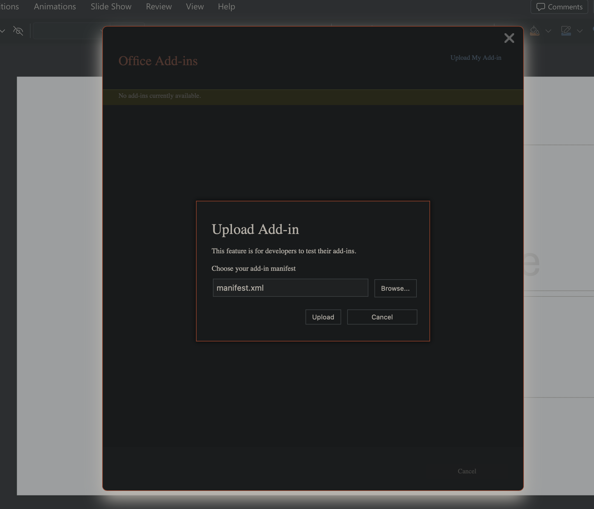

PowerPoint add-in · 2 of 3
Upload the add-in manifest
Use PowerPoint's upload dialog to add DICOM Slides to the Add-ins menu.
- 1
Choose Upload My Add-in
The command appears in the upper-right corner of the Office Add-ins window.
- 2
Select manifest.xml
Choose Browse, then select the file you downloaded.
- 3
Finish the installation
Choose Upload, then insert DICOM Slides from the Add-ins menu.
If the upload option is unavailable, your organization may restrict custom add-ins.
